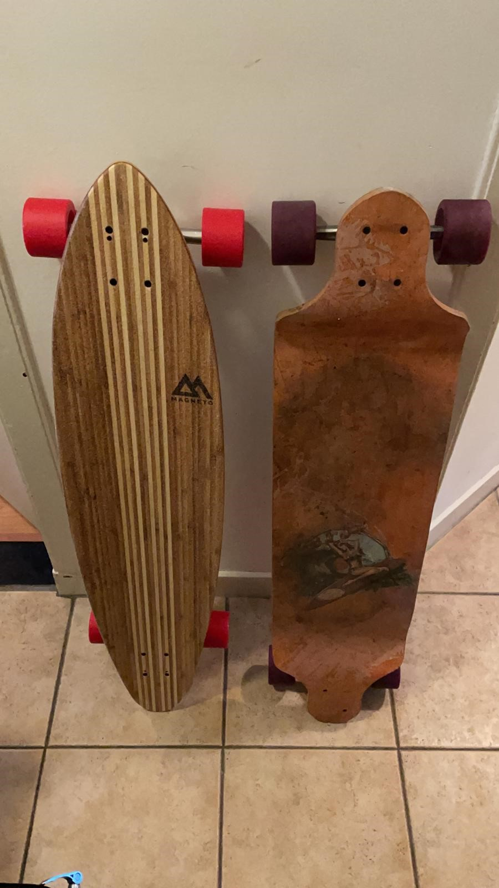

Longboarden is voor iedereen. Het is een toegankelijk sport om te beginnen, maar waar moet je beginnen?
Dat lees je op de pagina: Wat past bij mij?
Hoe het begon voor mij?
In Vlissingen heb je een mooie lange boulevard en volledig geasfalteerd. Daar ben ik begonnen met cruisen op mijn board. Mijn eerste board had een deepthrough deck (rechts op de foto) en was voor daar goed.Na enige jaren naar Tilburg verhuisd en in een drukke stad merkte ik dat het boarden met minder plezier ging. Vooral de wendbaarheid van mijn board was een nadeel. Sinds kort een nieuw board gekocht: een pintail (links op de foto). Het plezier in het boarden teruggevonden en ga dan ook met een lekker zonnetje heerlijk cruisen door de stad.
